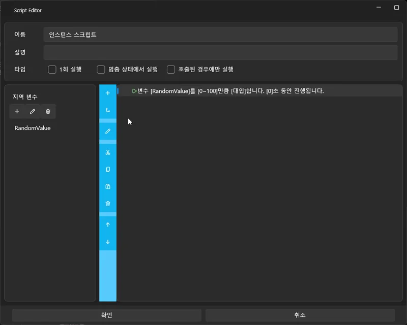

理解变量与条件逻辑¶
本教程将学习 变量（Variable） 与 条件逻辑（Condition Logic） 的概念，
并说明如何利用它们来控制项目内部的整体流程。
虽然 VSP 的变量系统与一般编程语言类似，
但它的特点是 扩展性极强，可以直接控制项目中的所有元素，
这是它最强大的部分。
📌 1. 什么是变量？¶
变量是用来存储数字、文本、状态等内容的小“盒子”。
示例：
- 冲击（Stroke）次数
- 选择结果
- 场景进度
- 累积分数
- 定时器数值
一般编程语言中，变量只负责存储值，
但在 VSP 中，变量还能执行 影响整个项目的各种功能。
📌 2. VSP 独有的强大变量系统¶
VSP 的变量不仅能存数据，
更是一个 可直接访问并控制项目内部所有组成要素的统一接口。
以下是变量可访问的主要项目元素：
🔷 基础变量（与一般编程相同）¶
- 数字、文本变量
- 变量递增/递减
- 条件分支（If / Else）
🔷 ✔ 扩展的变量输入源（VSP 专属）¶
设置变量时，可直接读取以下内容：
🟦 1) 随机数（Random）¶
- 可指定 0~100 等范围
- 用于概率事件、随机分支
🟪 2) 常数（Constant）¶
- 固定值
- 用于计算或比较
🟥 3) 轴（Axis）数值¶
- 设备输入（X0 / X1 等）
- UI 控件的滑块值
- Live2D 参数值
可根据设备动作触发条件事件。
🟧 4) 项目设置（Project Settings）¶
- 播放次数
- 通关次数
- 失败次数等
常用于根据玩家进度调整分支。
🟩 5) 轨道 / 媒体信息¶
- 轨道名称
- 当前播放时间
- 媒体文件路径、名称
- 音频播放状态
用于根据当前媒体内容进行条件判断。
🟨 6) UI 元素状态¶
- 按钮文本
- 复选框是否选中
- 滑块数值
- UI 显示/隐藏状态
可实现复杂的 UI 交互效果。
🟫 7) Live2D 参数¶
- 表情、动作参数
- 可根据条件切换动作
因此，VSP 的变量系统是 读取与控制整个项目的核心工具。
如果你有编程经验，可以把它理解为“全局系统 API”。
📌 3. 什么是条件逻辑？¶
条件逻辑根据变量的值决定执行不同的动作。
例：
StrokeCount >= 5→ 播放呼吸音Choice == 2→ 跳转到另一个轨道Random(0~100) < 30→ 30% 进入特殊场景
📌 4. 条件逻辑可用于哪些地方？¶
- 脚本中的 If / Else
- 按钮点击事件
- UI 显示/隐藏控制
- 跳转轨道（Jump Track）
- Live2D 表情切换
- 设备动作条件检测
- 保持高度检测等
📌 5. 脚本动作列表¶
所有脚本动作可在以下文档查看：
👉 脚本动作说明：
脚本
接下来将使用变量系统来制作一个
利用随机数的自动分支系统。
变量与条件逻辑：使用随机数进行自动分支¶
本节将使用 随机数（Random）、条件逻辑（Condition）、
以及 局部变量（Local Variable） 来实现
在指定时间自动跳转到随机场景的系统。
与之前使用“按钮选择”进行分支不同，
这次是 无需用户操作的自动分支。
1️⃣ 理解局部变量（Local Variable）¶
局部变量只在 该脚本内部有效。
✔ 特点¶
- 脚本执行时创建，结束后销毁
- 不会与其他脚本的变量冲突
- 适合保存随机值、临时计算数据
2️⃣ 在时间线上放置临时脚本¶
- 在左侧脚本面板中
将 “拖拽以添加空白脚本” 拖到时间线 - 放在你希望触发分支的位置（如 00:10.000）
- 双击脚本打开编辑器

3️⃣ 创建局部变量¶
- 在脚本编辑器右侧的 Variables 区域
- 点击 +
- 输入变量名（示例：
RandomValue）

4️⃣ 什么是随机分支？¶
当时间到达脚本所在位置时：
- 生成 0~100 的随机数
- 根据数值跳转到不同场景
例如：
- 小于 30 → 特殊场景（30% 概率）
- 大于等于 30 → 普通场景（70% 概率）
5️⃣ 构建随机条件脚本¶
📌 第 1 步：生成随机数¶
将 RandomValue 赋值为 0~100 随机数。

📌 第 2 步：添加条件判断¶
条件：
RandomValue < 30
- 若为真 → 跳转到特殊场景
- 若为假 → 跳转到普通场景


6️⃣ 全流程总结¶
- 在指定时间执行脚本
- 创建局部变量
- 生成随机数
- 使用 If 判断
- 根据结果 Jump Track
无需任何用户输入，
即可实现 自然且灵活的自动分支系统。
✨ 完成¶
你已经掌握以下内容：
- 创建局部变量
- 使用随机数 Random
- 使用条件逻辑 If / Else
- 使用 Jump Track
- 构建自动分支系统
这些功能非常适用于：
游戏式演出、随机事件、可变剧情等。
➡️ 下一步教程¶
完成随机分支逻辑后，
下一节将学习 图像联动（Images Integration）。
👉 图像联动